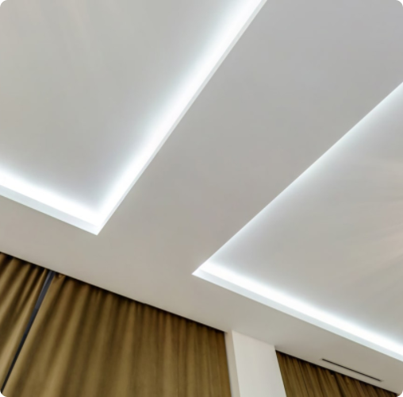
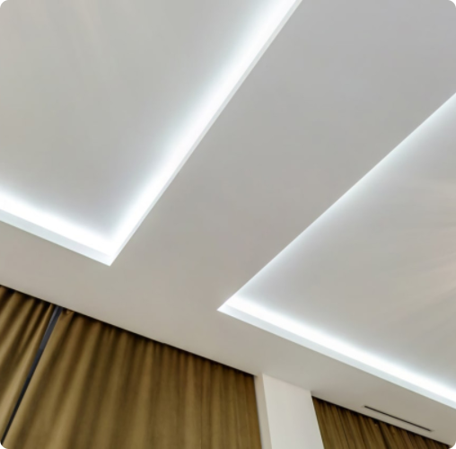

8 888 888 88 88


9:00 - 21:00 без выходных
8 888 888 88 88
9:00 - 21:00 без выходных
Главная — Блог — Разнообразить квартиру: плюсы и минусы натяжных потолков
Натяжные потолки
22.08.2022
Рассказываем о видах современных натяжных потолков, а также об их достоинствах и недостатках.

Фото: shutterstock
Натяжные потолки используют для разных целей — одним нужно замаскировать погрешности базового потолка и инженерные коммуникации, а другим хочется оригинального дизайна. Вместе с экспертами разбираемся в отличительных особенностях, а также плюсах и минусах натяжных потолков.
Первые натяжные потолки использовались еще в античности. Об этом, по словам дизайнера интерьеров Анастасии Аникеенко, свидетельствует занимательная история, согласно которой некий богатый человек в гневе бросил амфору, наполненную вином, в потолок и отказался убирать следы. Через некоторое время, чтобы скрыть следы, стены, пол и потолок были задрапированы тканью.
В современном мире первой страной, где натяжные потолки начали пользоваться популярностью, стала в 1960-х годах Швеция. Потом моду подхватили другие европейские страны, а затем и весь мир. Правильно подобранный потолок подчеркивает все достоинства и скрывает недочеты любого помещения, это самый быстрый и бюджетный способ оформления, отмечает владелец агентства недвижимости «Авеню-Москва» Вадим Богач.
Натяжной потолок — это специальное полотно из различных материалов. Его главная характеристика — возможность для натяжения под потолком и закрепления с помощью специальных металлических или тканевых профилей, говорит партнер бюро Blank Architects Магда Кмита.

Натяжной потолок — это специальное полотно из различных материалов (Фото: shutterstock)
2Натяжной потолок — это специальное полотно из различных материалов (Фото: shutterstock)
3Натяжной потолок — это специальное полотно из различных материалов (Фото: shutterstock)


Натяжной потолок делают из поливинилхлоридной (ПВХ) пленки или из полиэфирной ткани (полиэстер, пропитанный полиуретаном).
Натяжной потолок делают из поливинилхлоридной (ПВХ) пленки или из полиэфирной ткани (полиэстер, пропитанный полиуретаном). Потолки из виниловой пленки изготавливаются под индивидуальные размеры и конфигурацию помещения путем сварки полос поливинилхлорида шириной от 1 до 5 м на ТВЧ-станках. По словам Вадима Богача, при монтаже полотно натяжного потолка разогревают газовыми пушками до температуры 70 градусов, после чего пленка размягчается и ее растягивают на предварительно смонтированный профиль. Наиболее популярные фактуры — глянцевая, матовая и сатиновая. 
“
Натяжные потолки на российском рынке существуют уже как минимум пару десятилетий, но если раньше натяжные потолки были в основном глянцевыми и сильно выделялись в интерьерах, то сейчас разнообразие видов полотна и материалов позволяет использовать технологию практически в любом по стилистике интерьере квартиры
Магда Кмита, партнер бюро Blank Architects
Глянцевые натяжные потолки имеют широкую цветовую гамму. Отличительная характеристика — зеркальное отражение. Помещение визуально увеличивается при использовании таких полотен. Недостатками глянцевых натяжных потолков является более заметная на зеркальной поверхности линия шва, добавляет Анастасия Аникеенко.
На матовых натяжных потолках не бывает бликов и отблесков, благодаря чему происходит точная цветопередача. Матовое полотно отличается экологичностью, оно не выделяет запах, токсичные вещества. По словам Анастасии Аникеенко, еще одно весомое преимущество — это стойкость к механическому износу. Однако грязь с матовой поверхности смывать несколько сложнее, чем с глянца.
Главный плюс сатиновых натяжных потолков — это возможность монтажа многоуровневых потолочных конструкций. Можно установить двухцветные потолки, создать интересные переходы, ниши. Также стоит отметить пожаробезопасность этого потолка, замечает Магда Кмита. Сатиновый материал не горит и не выделяет опасные газы при высокой температуре. Но есть и недостаток — монтировать такой потолок можно только в отапливаемых помещениях.
 

При покупке натяжного потолка надо обратить внимание на качество материала (Фото: shutterstock)
В настоящее время очень популярна теневая подсветка. Учитывая, что ПВХ-полотно может быть легко повреждено, переклейка обоев и перекрашивание стен представляет собой определенный риск для потолочной поверхности и накладывает на эти процессы дополнительные сложности, говорит Анастасия Аникеенко. Теневой зазор позволяет забыть про эту проблему и с легкостью обновлять покрытие стен без риска для потолка, а также проводить в зазоре светодиодные подсветки, свет закладывается в нишу и создается эффект тени.
В случае с «парящими» потолками с подсветкой результат достигается с помощью специального профиля, в который устанавливается светодиодная лента. Она светит на стену, стирая границы между потолком и стеной. Кажется, что потолок парит в воздухе, зрительно увеличивая пространство.
Главной особенностью трековых натяжных потолков является наличие трека, основной функцией которого является подача электропитания к закрепленным на нем светильникам, рассказывает Магда Кмита.


Различают следующие типы трековых светильников:
Предназначение трековых светильников — создание яркого направленного потока света, достижение необходимых уровней освещения и акцентирование внимания на определенных элементах обстановки. Они используются для визуального зонирования жилого пространства, поясняет Вадим Богач. Этот тип широко используется в коммерческих помещениях и на арт-площадках в качестве подсветки витрин, сценических или выставочных объектов, также это прекрасный вариант освещения для промышленного сектора.
Наиболее удачным вариантом будет люстра с плафонами, направленными вниз либо в стороны, но не в потолок. Так можно избежать излишнего нагрева полотна. Абажуры и плафоны лучше выбирать закрытого типа, говорит Анастасия Аникеенко. Наиболее подходящими считаются подвесные люстры, ведь расстояние от потолка до лампочки существенно увеличивается. По словам эксперта, это не значит, что потолочные приборы вообще не подойдут, просто надо обратить внимание на основание. Оно не должно сильно нагреваться, поэтому металлическое основание вряд ли подойдет. При выборе фактуры натяжного полотна необходимо помнить, что на глянцевой поверхности все хорошо отражается.
Идеальное решение — светодиодные лампы. Они не нагреваются, а значит, отлично подходят для освещения натяжного потолка в любых видах люстр, добавляет Магда Кмита.
Лампочка такая-то, хорошая
Гардина
Лампочка такая-то, хорошая
Монтаж натяжного потолка — не самая сложная процедура. Но лучше, если ее будет проводить специалист (Фото: shutterstock)
Ещё какой-то аксессуар
“
Из бытовых преимуществ выделяется эффективность натяжных потолков в интерьерах ванных комнат. В случае затопления в многоквартирном доме полотно сможет удержать влагу, его будет легко вскрыть и просушить. Из-за обилия и вариативности принтов и фотопечати натяжные потолки выбираются часто для дизайна детских комнат: на потолке можно создать сказочные сюжеты, изобразить звездное небо, сделать интересный и приятный для ребенка дизайн. Также отмечается легкость монтажа и замены освещения: светильники в натяжном потолке легко заменить, подобрав новые в той же форме, а также можно заранее запланировать в полотне дополнительные места для светильников и смонтировать их уже позднее, обновив сценарии освещения комнаты.
Магда Кмита, партнер бюро Blank Architects
По мнению опрошенных «РБК-Недвижимостью» экспертов, надо обратить внимание на качество материала, он не должен иметь неприятного запаха. Запах пластика поначалу может присутствовать, но вскоре после монтажа он должен выветриться. И, как бы банально ни звучало, перед покупкой надо читать отзывы о производителе.
Существуют два вида плинтусов для натяжного потолка:
Более прочным и гибким изделием по своей структуре является потолочный плинтус для натяжных потолков, сделанный из полиуретана. Потолочный плинтус для натяжных потолков из пенопласта удобен в использовании и дешев, но среди недостатков можно выделить его непластичность и хрупкость. Из-за этого такой плинтус можно легко повредить в результате неосторожных движений, резюмирует Анастасия Аникеенко.
Натяжные потолки
22.08.2022
Похожие статьи
.png)


Отправляя заявку, я соглашаюсь с Политикой обработки персональных данных.